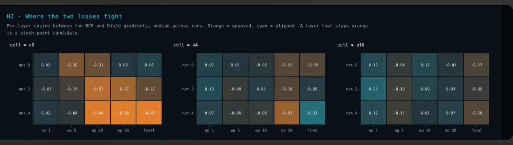

1 · What a pinch point is
A pinch point is a layer where both loss terms want something from the weights and the layer cannot give both. In BCE + \(\alpha\,\)DisCo training, that means a layer whose weights the classifier term pulls one way while the decorrelation term pulls the other, with comparable force, so the layer barely moves. If that is a capacity limit, it is where the network's shape is blocking the trade-off between separation (AUC) and ABCD closure.
The diagnostic is cheap: for each layer \(\ell\) take the gradients of the two terms on a fixed held-out probe batch and compare them. It needs no retraining and runs on saved checkpoints or during training.
2 · The three scores
With \(g_B = \nabla_{\theta_\ell}\mathrm{BCE}\) and \(g_D = \nabla_{\theta_\ell}\mathrm{DisCo}\) restricted to layer \(\ell\):
Direction $$c_\ell = \frac{g_B \cdot g_D}{\lVert g_B\rVert\,\lVert g_D\rVert} \in [-1, 1]$$
Balance $$\rho_\ell = \frac{\alpha\,\lVert g_D\rVert}{\lVert g_B\rVert}$$
Cancellation $$\kappa_\ell = \frac{\lVert g_B + \alpha\, g_D\rVert}{\lVert g_B\rVert + \alpha\lVert g_D\rVert} \in [0, 1]$$
- \(c_\ell\) says whether the two terms agree on the direction. It ignores how hard each one pulls.
- \(\rho_\ell\) says whether the pulls are comparable. Near 1, direction matters; far from 1, one term simply wins.
- \(\kappa_\ell\) combines both: it is the fraction of the total pull that survives the sum. \(\kappa_\ell \approx 0\) is a tug of war with no net motion; \(\kappa_\ell = 1\) means the terms add.
The three are linked: \(\kappa_\ell^2 = \dfrac{1 + \rho_\ell^2 + 2\rho_\ell c_\ell}{(1+\rho_\ell)^2}\). So \(\kappa_\ell \to 0\) requires both \(c_\ell \to -1\) and \(\rho_\ell \to 1\). A strongly negative cosine alone is not a stall.
Provisional pinch-point criterion: a layer with \(\kappa_\ell < 0.3\) and \(1/3 < \rho_\ell < 3\) during training (epochs 5–20), in most seeds, more than the other layers. The thresholds are placeholders chosen by eye on the stand-in data; they must be fixed in the pre-registration before any ATLAS run, or replaced by a rank rule ("the most-stalled layer").
3 · Reading the panel

- Cell a0 (\(\alpha = 0\)) is the most orange: down to −0.87 at the output layer (
net.4) from epoch 10 on. But DisCo has zero weight there, so nothing is fighting. The orange is the opposition DisCo would exert if switched on: BCE trained freely toward a correlated solution, and on held-out events its remaining gradient points almost exactly against decorrelation. For these runs \(\rho_\ell = 0\) and \(\kappa_\ell = 1\), which is why the cosine cannot be read alone. - Cells a4 and a16 settle near orthogonal (\(|c_\ell| \lesssim 0.2\)) with scattered orange, including a4's −0.53 at
net.4at epoch 20. With DisCo active, training found weights where the two terms can coexist locally. Whether any of those cells is a stall depends on \(\rho\) and \(\kappa\). In this stand-in none is: \(\kappa\) stays at or above 0.53 and \(\rho\) runs from about 0.5 to 20 (DisCo usually dominates), so no layer meets the stall criterion. a4's −0.53 atnet.4, epoch 20, comes with \(\rho \approx 1.1\) and \(\kappa = 0.53\): the closest thing to a fight in the data, and still well short of a stall.
4 · How valid is this analysis?
What it has going for it
- Permutation-safe. Reordering hidden units permutes \(g_B\) and \(g_D\) together, so \(c_\ell\), \(\rho_\ell\) and \(\kappa_\ell\) do not change. Weight-space comparisons between seeds (barriers) do not have this property.
- Same events for every run. All scores use one fixed probe batch, checked by hash; the site warns if runs disagree.
- Exact objective. The terms come from your own
loss_terms, weighted as in training. - Cheap and repeatable. One backward pass per term per snapshot. In-training and post-hoc values agree exactly on the same weights.
Threats, and what handles each
| Threat | Why it matters | Handled by |
|---|---|---|
| Equilibrium identity | At a stationary point of the total, \(g_B = -\alpha g_D\), so \(c = -1\), \(\rho = 1\), \(\kappa = 0\) by construction. A converged model on the trade-off looks maximally "stalled". | Only stalls during training count. The final column is excluded from the criterion. |
| Magnitude blindness | A cosine of \(-0.9\) is irrelevant if one pull is \(100\times\) the other. | \(\rho\) and \(\kappa\). |
| Probe batch ≠ training batch | The optimizer feels training-minibatch gradients; the probe batch is held-out events. A layer can stall on one and not the other. | Treat probe scores as a proxy. Cross-check by re-probing with a probe batch drawn from training events: if the stall pattern flips, report both. |
| Minibatch DisCo | Training's DisCo is a minibatch statistic with small-sample bias; the probe computes it over the probe batch's background. | The dCor-gap panel quantifies the bias. A large gap weakens any pinch claim about DisCo's pull. |
| Optimizer preconditioning | Adam rescales each coordinate. \(\kappa\) measures cancellation of the raw summed gradient (what Adam receives), not the step Adam takes; Adam's normalization can still move a cancelled layer by amplifying the residual. | Read \(\kappa\) as "how much consistent signal reaches the layer", not "how far it moves". Optionally log per-layer update norms in training as a check. |
| Layer granularity | A layer-level score averages over units. Half the units can fight while the other half agree. | Layer-level first. Unit-level scores only if a layer is flagged. |
| Seed noise | One seed's stall can be noise. | Medians across seeds; the criterion needs most seeds. Seed SDs from the Tier A run set the margins. |
| Thresholds | \(\kappa < 0.3\) and \(\rho \in (1/3, 3)\) are arbitrary. | Pre-register them, or use a rank rule. |
| \(\alpha = 0\) runs | Show DisCo's counterfactual pull only. | \(\kappa = 1\), \(\rho = 0\) mark them; use them as the "unconstrained" reference. |
| Correlation, not cause | A stalled layer co-occurring with poor closure does not mean widening it helps. | The intervention test in section 6. This is the decisive one. |
Bottom line. The scores are valid descriptions of where the two objectives compete on held-out events. They are hypotheses, not findings, about where the architecture limits the trade-off. Only changing the network and measuring turns one into the other.
5 · Are pinch points bad?
Not necessarily. Whether a pinch is bad depends on what relieving it does:
- Bad (a capacity limit): widening or rerouting that layer pushes the AUC–closure trade-off outward, giving more closure at the same AUC or the reverse. Then the architecture itself was limiting what the loss could achieve.
- Harmless or even useful: the constraint has to cost somewhere. Decorrelation removes information, and some layer has to absorb that. Relieving the pinch can also backfire: extra capacity can let the net satisfy DisCo on training minibatches while dependence survives in a form the minibatch dCor misses, so held-out closure gets worse. The dCor-gap panel is where that would show.
So a pinch point is a hypothesis about where capacity would help, not a verdict.
The split stays clean: LATHE diagnoses, TRUSS intervenes. Different patterns call for different fixes:
| Pattern | Likely cause | Next-phase fix |
|---|---|---|
| Stalled at every epoch, most seeds | Capacity | Architecture (TRUSS): widen that layer, add a skip around it, split into a classifier path and a decorrelation path, or gate it (TRUSS already plans GRU-style gates) |
| Stalled early, clears later | Timing: DisCo overpowers BCE before the classifier forms | Loss schedule (the \(\alpha\) ramp, \(\tau\)), no architecture change |
| Stalled only in the final column | Equilibrium on the trade-off | Nothing |
6 · The test that decides
Pre-register a matched-cost control:
Widening the predicted pinch layer moves the AUC–closure front more than widening a non-pinch layer with the same added parameter count, and more than widening a randomly chosen layer.
- Score it the way TRUSS already does: AUC1, WP and tail %|nc|, \(Z_A\), the health gate, seed stability.
- Mechanism check: the targeted change should also raise \(\kappa\) at that layer during training. If the metrics improve but \(\kappa\) does not, the improvement came from something other than relieving the pinch.
- Kill criterion: if pinch-targeted changes do not beat the matched controls, the diagnostic does not help choose architectures, and it is dropped from TRUSS.
Work already underway
pinch_probe.py produced pre-registered pinch predictions from the Stage 1 checkpoints, and Stage 2 has 14 architecture specs. Once Stage 2 has run you can check, with no new training:
- Do \(\kappa\) and \(\rho\) point at the same layers as
pinch_probe? - Did the Stage 2 specs that relieved those layers actually move the front?
If both are yes, the fingerprint is earning its place in TRUSS. If the scores disagree with pinch_probe, Stage 2's results decide which one was right.
7 · From pinch points to a richer loss landscape
"Richer" here means a landscape in which the trade-off frontier can be reached without stalls: the two objectives can both be served, basins at a given closure are wider and better connected, and seeds land in equivalent places. The pinch analysis is the first instrument that says where the current landscape falls short of that, layer by layer and epoch by epoch, instead of only that it does.
Levers that reshape the landscape at a pinch
| Lever | What it does to the landscape | Fits which pinch |
|---|---|---|
| Widen the layer | Adds directions, so both terms can be served by different weights instead of competing for the same ones | Persistent (capacity) |
| Skip connection around it | Gives gradients a path that bypasses the stalled layer; skips are known to smooth loss surfaces (Li et al. 2018) | Persistent, deep nets |
| Split paths (classifier / decorrelation) | Separates the parameters each term acts on; the Hessian becomes closer to block-diagonal between the paths | Persistent, \(\rho \approx 1\) |
| Gating (GRU-style) | Lets the network learn when each path contributes | Persistent, epoch-dependent |
| \(\alpha\) ramp, \(\alpha(t) = \alpha_{\max}\min(1, t/\tau)\) | Changes the landscape over time: DisCo's pull arrives after the classifier forms | Early (timing) |
| Larger DisCo batch \(n_{\text{disco}}\) | Smooths and de-biases DisCo's pull | Pinches with a large dCor gap |
| Layer-local gradient surgery (PCGrad, Yu et al. 2020) | At the flagged layer only, removes the component of one gradient that opposes the other | Persistent; a loss-side alternative to adding capacity |
Why this gives a richer landscape, not just a better model
- Each intervention makes a two-part prediction: a mechanism (\(\kappa\) at the flagged layer rises during training; \(\lambda_{\min}\) becomes less negative; seed-pair barriers and seed SD shrink) and an outcome (the front moves). Measuring both separates "the landscape changed the way we intended" from "the metric moved for another reason".
- Interventions become data. Every (architecture, loss setting) → fingerprint → metrics triple is a row for the LATHE surrogate. If the kill test passes (fingerprints predict held-out closure better than hyperparameters alone), the fingerprint becomes the design space: specify the landscape you want (no stalls, flat connected basins) and search for architectures and loss schedules that produce it.
- It closes the loop with TRUSS. TRUSS's search stops being blind: candidate specs are proposed where the landscape says capacity is missing, and the matched-cost controls keep that honest.
References
- H. Li, Z. Xu, G. Taylor, C. Studer, T. Goldstein, Visualizing the Loss Landscape of Neural Nets, NeurIPS 2018. arXiv:1712.09913
- T. Yu et al., Gradient Surgery for Multi-Task Learning (PCGrad), NeurIPS 2020. arXiv:2001.06782
- G. Kasieczka, D. Shih, Robust Jet Classifiers through Distance Correlation (DisCo), PRL 2020. arXiv:2001.05310
- G. Kasieczka, B. Nachman, M. Schwartz, D. Shih, ABCDisCo, PRD 2021. arXiv:2007.14400
- T. Garipov et al., Loss Surfaces, Mode Connectivity, and Fast Ensembling of DNNs, NeurIPS 2018. arXiv:1802.10026
- S. Ainsworth, J. Hayase, S. Srinivasa, Git Re-Basin, ICLR 2023. arXiv:2209.04836